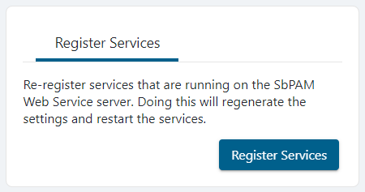

Summary
If SbPAM services are down, you will receive a warning at the top of the user interface. This article outlines steps that can be taken to bring SbPAM services back online.
Instructions
If a warning appears at the top of the SbPAM interfacing stating a service is offline, take the following steps to attempt to bring the affected service back online.

First, check Windows Services to see if any of the SbPAM services are not running.
If any aren't running, either start them using the Windows Services interface or run the following in an elevated PowerShell:
Start-Service sbpam*
In this instance 1 out of the 5 services are running so I will manually start the services by opening services.msc on the local SbPAM Server.
If all SbPAM services are running in Windows Services yet there's still a services warning in the SbPAM web application interface, then the next step is to re-register the services with SbPAM.
Log-in to SbPAM's web application as an Admin. In the upper-right click the current logged-in user's name, then click Settings, and then click Register Services.

If issues persist, please gather SbPAM's logs and contact Netwrix Support.